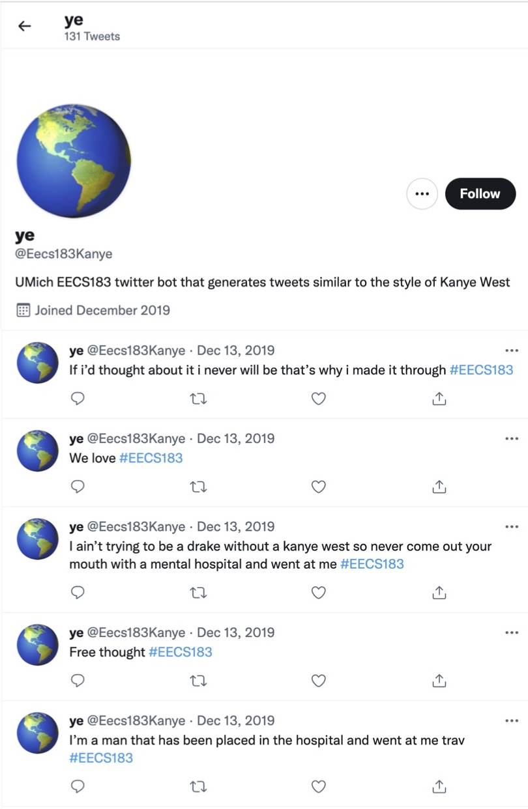

EECS 183
In this project, my team and I utilized natural language processing and machine learning techniques to construct tweets imitating the style of tweets posted by celebrities, specifically Kanye West. We created a program using n-gram language models and Python’s spaCy library to mimic language styles and predict English sentences.
